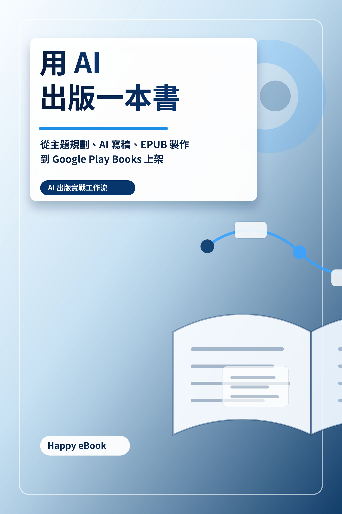

Google Play Books
用 AI 出版一本書
從主題規劃、AI 寫稿、EPUB 製作到 Google Play Books 上架

付費購買提供試閱版
用 AI 出版一本書
從主題規劃、AI 寫稿、EPUB 製作到 Google Play Books 上架
《用 AI 出版一本書》是一本寫給知識工作者、教師、講師、顧問與個人創作者的 AI 出版實戰指南。本書不把 AI 視為自動寫書機，而是把 AI 放進一套可維護的出版工作流。你會學到如何從主題規劃、讀者定位、AI 對話、大綱設計、章節寫作、審稿查證、EPUB 製作，到 Google Play Books 上架資料與社群宣傳，一步步完成一本可閱讀、可更新、可交付的電子書。適合想出書但不知道如何開始、已有文章或課程內容想整理成電子書、會使用 AI 對話工具但不知道如何收斂成書稿，以及想建立 Markdown、EPUB、上架資料與行銷素材工作流的讀者。本書提供提示詞範例、表格、檢查表與出版前後的工作流程，協助你把零散想法變成可維護的電子書專案。